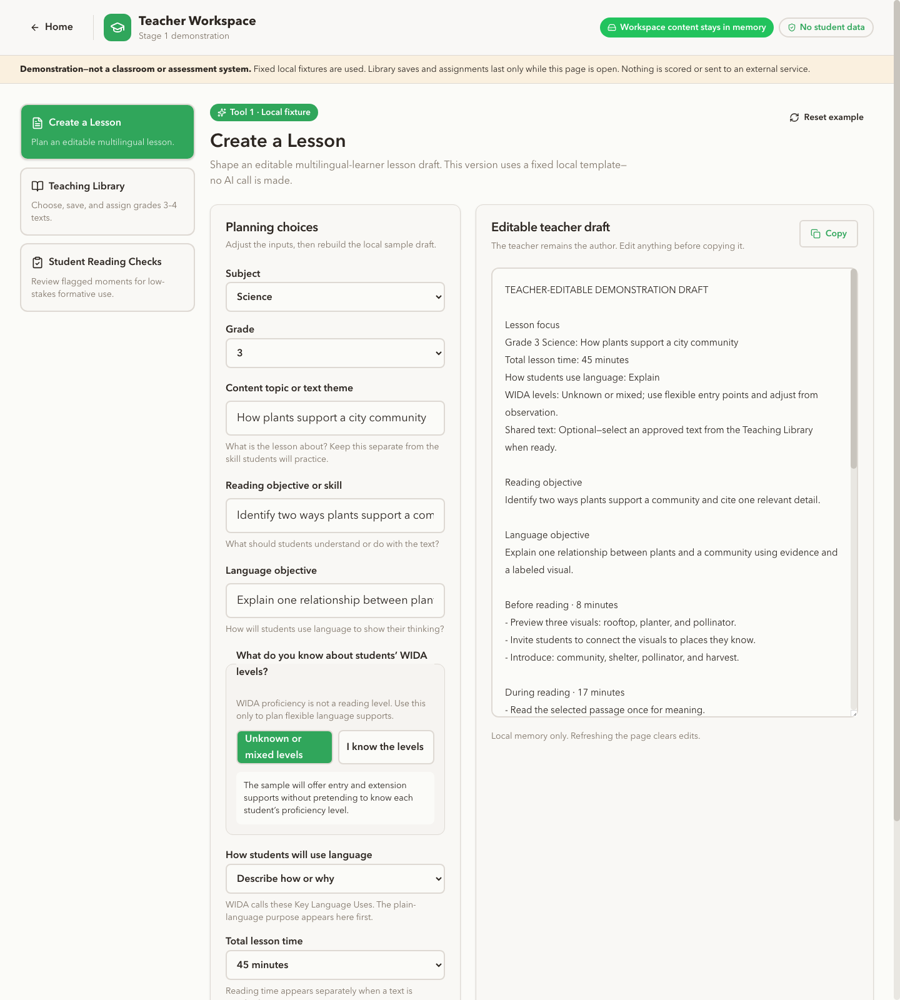
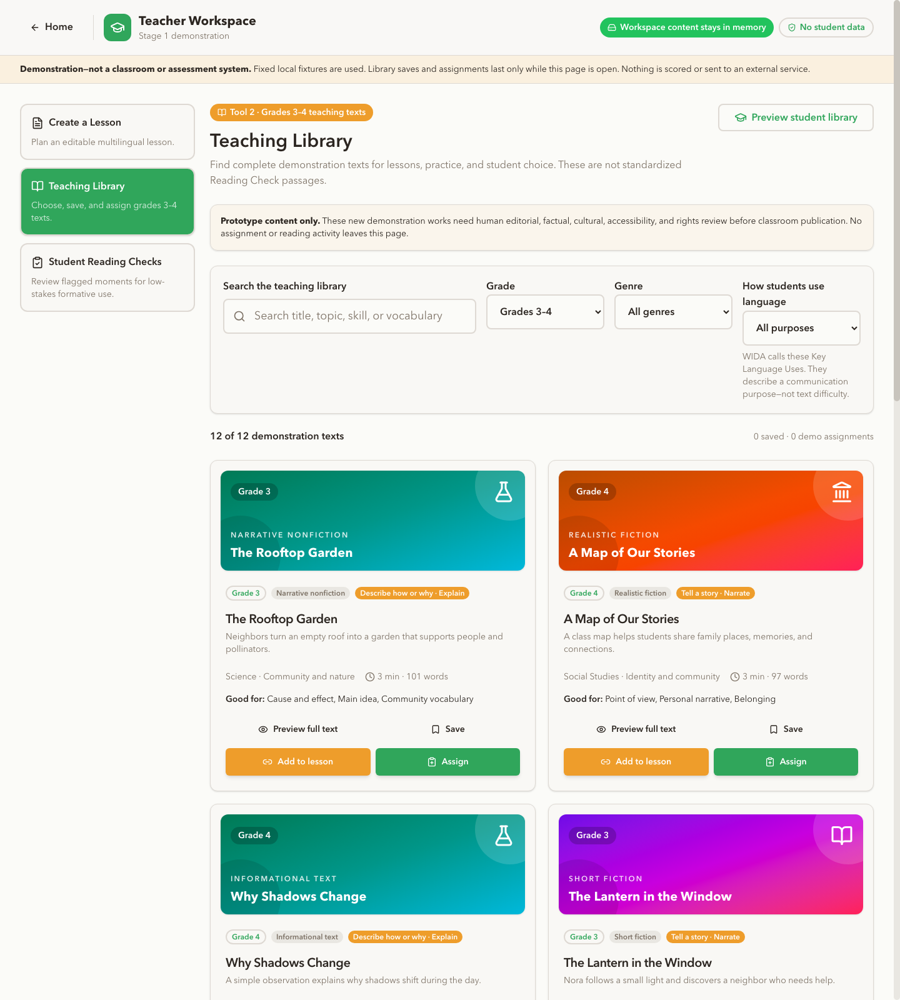
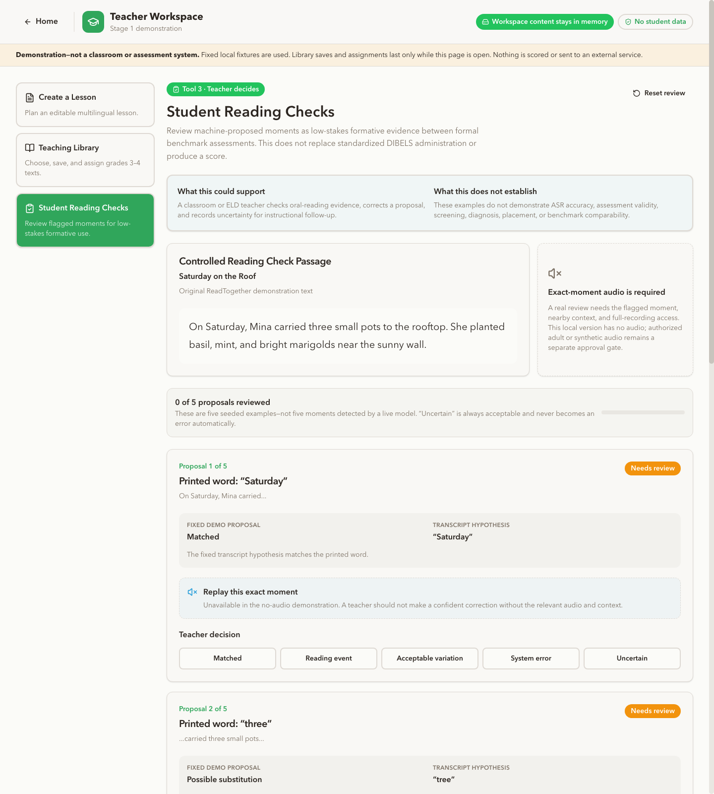

Keep grade-level purpose visible.
The lesson workflow separates the story or content topic from the objective skill and language goal. Mixed and unknown WIDA levels are treated as planning context—not as automatic labels for students or texts.
ReadTogether explores one connected workflow for multilingual reading instruction: create an editable lesson, select or assign a demonstration text, support the student reading experience, and inspect teacher-confirmed formative evidence. The current product is a local, synthetic-data prototype shaped by eight years in K–5 classrooms.
Clarify the content topic, reading skill, language objective, mixed or unknown WIDA levels, lesson duration, and optional text.
Search 12 demonstration texts, add one to a lesson, or create a fictional in-memory assignment with reading supports.
Inspect fixed reading-check proposals, return to the exact audio moment in a future approved and evaluated workflow, and keep the teacher as confirmer.
The lesson workflow separates the story or content topic from the objective skill and language goal. Mixed and unknown WIDA levels are treated as planning context—not as automatic labels for students or texts.
A text can become part of a lesson or be assigned independently. That distinction matters when a teacher wants a quick reading task for one learner without building a complete lesson.
The local reader demonstrates text-size, contrast, focus, word-help selection, and a comprehension response. While the page remains open, the fictional teacher can inspect that response and the selected help words.
Teacher-confirmed proposals may support informal instructional review, but the prototype is not presented as a replacement for DIBELS or another standardized benchmark. No audio, score, accuracy, validity, or time-savings claim is made.
These screenshots document the latest verified local Teacher Workspace. They show implemented interface behavior—not a deployed classroom product, completed educator study, or validated assessment.

Teachers distinguish the text topic from the reading skill and language objective, plan for mixed or unknown WIDA levels, set total lesson time, and optionally attach a text.

The local library contains 12 complete demonstration texts across multiple genres. Teachers can save, add to a lesson, or create a fictional in-memory assignment with selected questions and supports.

The interface demonstrates five teacher labels and confirmation for fixed proposals. A responsible future audio workflow would require replay at the exact moment; this local screen has no audio or scoring model.
This small public interaction represents the lesson-planning origin of the project. Change the inputs and preview a deterministic sample. Nothing is submitted, stored, or sent to an AI service.
The current local Teacher Workspace and the preserved full-stack prototype are separate evidence surfaces. The local workspace is intentionally synthetic and in-memory; the recovered codebase shows broader architecture that still requires runtime, privacy, and provider verification.
The latest Grade 3–4 interface runs on fixed fixtures and page memory. Inspected workspace code makes no backend, model, speech, payment, or analytics calls.
The preserved source includes lesson, authentication, database, speech, model-provider, and payment code. The presence of code is not evidence that each integration is live, safe, or approved.
Grade · subject · topic · WIDA levels · Key Language Use · duration
Names · IDs · rosters · audio · IEP information · service status · assessment transcripts
The product owner completed a private dry run, but no educator, student, family, school, or district has evaluated ReadTogether. That limits what I can claim—and clarifies what should happen next.
Run the approved no-student Grade 3–4 educator walkthrough before expanding features.
Review content, language demands, cultural representation, accessibility, and rights title by title.
Only test audio after the rubric, replay workflow, privacy path, reference process, and stop rules are approved.
I'm Matthew Tracey—an instructional designer and EdTech product builder with two M.Ed. degrees and eight years in K–5 classrooms. I translate instructional problems into clear product decisions and inspectable prototypes.